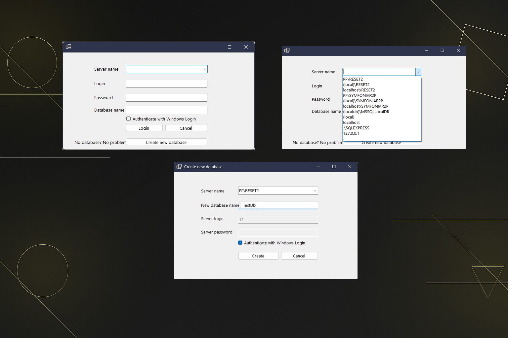
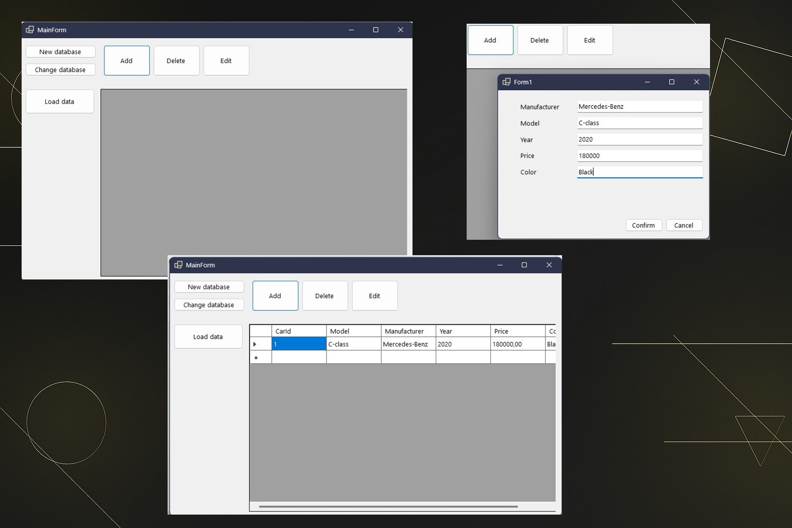

WMS Project
WMS Project


Cel aplikacji
System zarządzania magazynem (WMS) stworzony w krótkim czasie (ok. tydzień) w technologii WinForms. Obejmuje podstawowe operacje CRUD do ewidencjonowania stanu magazynowego samochodów (oraz informacji o samochodach). Aplikacja desktopowa na .NET Framework do pracy w sieci lokalnej.
Technologie
C#
WinForms
.NET Framework
MS SQL Server
Plan rozwoju
- Przepisanie na WPF